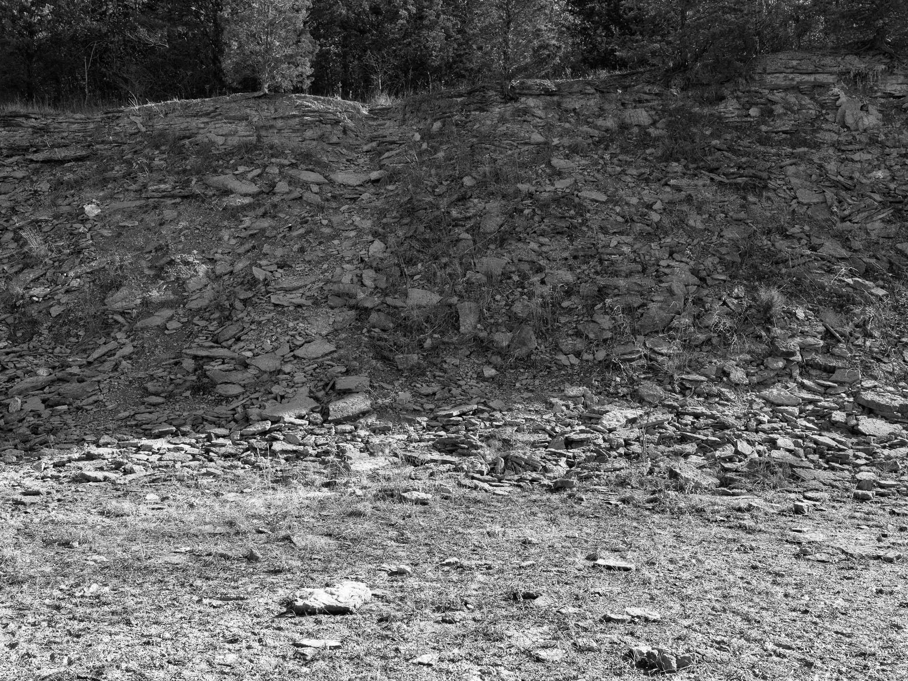
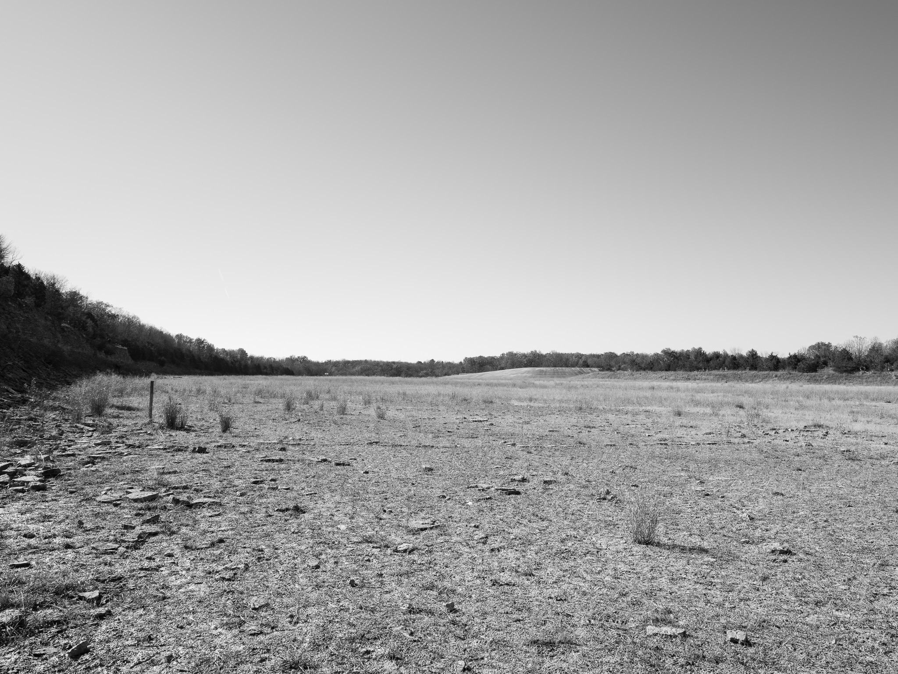
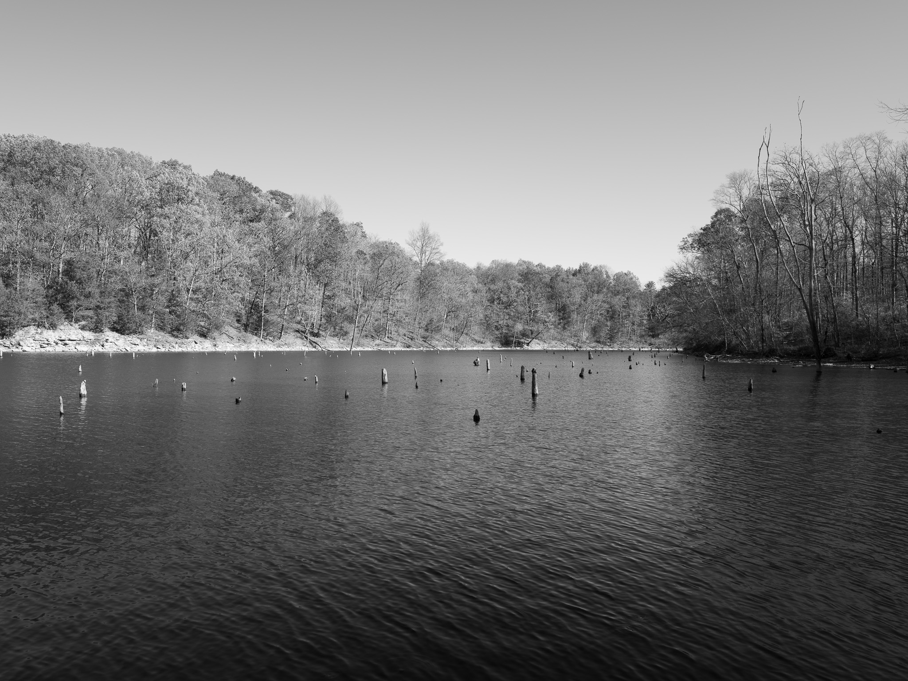
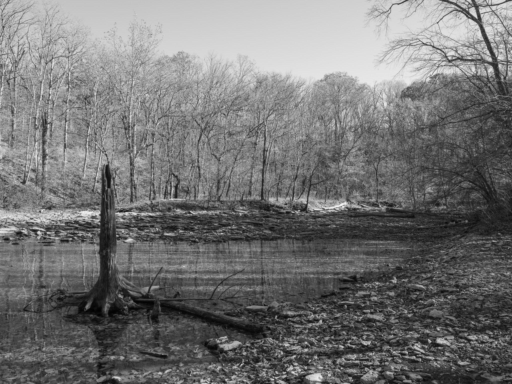

Public Lands Institute
Map
Archive
About
Caesar Creek State Park
OH

Caesar Creek State Park 1 · 2025-11-17
_DSF0419.jpg

Caesar Creek State Park 2 · 2025-11-17
_DSF0426.jpg

Caesar Creek State Park 3 · 2025-11-17
_DSF0428.jpg

Caesar Creek State Park 4 · 2025-11-17
_DSF0438.jpg
View all 4 images
← Dinsmore Woods State Nature Preserve
Shawnee Lookout →